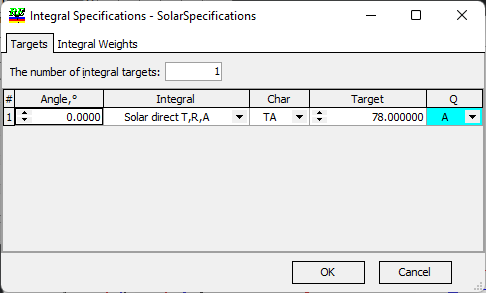

Integral Specifications
Integral Specifications
Navigation: OptiLayer Menu Commands > Data Menu >
Integral Specifications
` <specifications_from_target.html>`__ ` <idh_menu_data.html>`__ ` <color_specification.html>`__
The Integral Specification database in OptiLayer is similar to the Integral Target database, with a key difference in its purpose and usage. Integral Specifications are specifically designed to assess the performance of a current design based on the provided limits for Integral values. Essentially, Integral Specifications are used to evaluate how well a given design meets the specified Integral value constraints, allowing for a comprehensive analysis of the design’s performance in relation to the set limits.

In the Integral Specifications Qualifier column, the values that can be assigned are A, B, or R, corresponding to Bypass Above, Bypass Below, or Range, respectively. For instance, in the context of an Integral Specification with Solar Direct integral for the transmittance at normal incidence, if the Qualifier is set to “Bypass Above,” it means that the transmittance at normal incidence should not be smaller than 78, ensuring that the specified limit is met for the Solar Direct integral in this case.